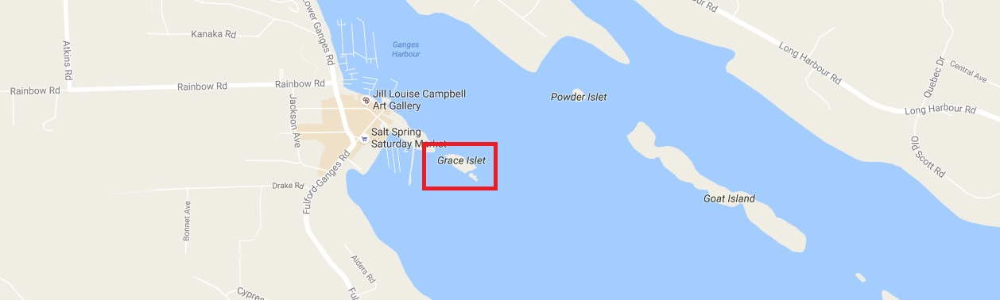

Modern Introduction
Visible from the docks in Ganges Harbour, Grace Islet is a small land mass just off the East Coast of Salt Spring Island. In 1990, the Edmonton-based owner of the now-defunct novelty shop San Francisco Gifts; Barry Slawsky, purchased the property. However, this is not where the story of Grace Islet begins. Provincial records state that the islet has been part of Coast Salish traditional territory since time immemorial. More specifically, the islet was part of the village of Shiyahwt (Hul’qumi’num), or SYOWT (Sencoten). Its traditional name; shmukw’elu, roughly translates from Hul’qumi’num to “a place to have funerals and containers (for bodies)”. This continued to be its only recorded purpose until 1966, when the Ganges Harbour village site was first recorded by Donald Abbot. Grace Islet was a part of the observed site. Studies of the site continued to occur over the years, recording the shell midden deposit and cataloguing artifacts collected by local residents. Sometime between 1974 and 1989 the property was rezoned “Islet Residential”. In 1989 the property acquires the legal means to allow hydro, sewage, and electrical services to be instated on the islet. It even gets its own parking space at Grace Point. Siting the beautiful location as a selling point, Slawsky bought the property the following year.
Fast-forward to April of 2006, when kayakers discover human remains exposed near the water on Grace Islet. During an interview with CBC Radio in June 2014, an archaeologist for the Hul’qumi’num Treaty Group, Eric McLay, recounted his findings from his investigation of the site when the remains were discovered 8 years prior. McLay found that the remains were that of an adult and a sub-adult. Near the shoreline he also found what appeared to be the burial cairn of the two deceased individuals, and upon further investigation inland he uncovered two more previously unidentified cairns. McLay expressed his shock when he discovered that the land did not belong to the crown, but was in fact a privately owned property. His official recommendation was that the remains would be returned to the Coast Salish community and reinterred.
The Begininning of the Dispute
A letter was sent to Slawsky, informing him that cairns were found, and that the entire islet was under the protection of the Heritage Conservation Act, and that before any development of the islet took place an Archaeological Impact Assessment (AIA) would have to take place. Provincial records show that over the next year, Slawsky went through channels to have the AIA performed. In March of 2007, the AIA took place over three days, being led by two contracted archaeologists hired by Slawsky from Bastion Group Heritage Consultants and representatives of the Tsartlip, Tseycu, Tsawout and Cowichan Tribes First Nations. Fifteen rock features and two locations containing human remains were identified during the process. In 2010 the AIA was finalized and submitted alongside an architect’s plans to build Slawsky’s retirement home. The final report recommends that all burial cairns be protected from disturbance.
Construction soon began in 2011 after an alteration permit was issued to Slawsky and Kevin Twohig of Terra Archaeology, who was hired by Slawsky to be his archaeological consultant. In July 2012, the Penelakut Tribe alleged that Slawsky had breached the protection of the Heritage Conservation Act by performing “unmonitored ground disturbing activity”, an act that also breached the conditions of his alteration permit. Kevin Twohig stated he was not on site for any ground disturbing construction that had taken place, as well as that he was unaware that any land clearance had happened at all. An investigation of the islet revealed that unmonitored disturbance had indeed taken place, but had avoided all recorded burial cairns. However, the cairns were avoided by a narrow margin, as the set perimeter was supposed to be 2m from each structure. In some cases, the actual clearance was closer to 2mm. Slawsky attempted to avoid the cairns by covering them with plywood, then in some cases covering their new “protective” layer with cement. Two cairns were found straddling the foundation of the house, and construction blueprints revealed that the house would be erected right on top of them. Another cairn was found to be situated inside the houses foundation, so that once construction was completed it would be completely blocked off and inaccessible. Robert Morales, a lawyer and negotiator with the Hul’qumi’num Treaty Group, insisted that what Slawsky was doing violated the Heritage Conservation Act, saying that “[u]nder the HCA, it says that a person must not desecrate or alter a burial place ... desecrate means to insult something that is holy, to damage something sacred, to damage something that is revered. Building a house on a gravesite is an insult to something that is considered holy to the Coast Salish People”.
It should be noted that throughout the construction process Slawsky has refused to acknowledge that his property contained First Nations burial cairns. When criticized about building on a First Nations cemetery, he chose to say “nothing could be further from the truth”, claiming that “a single femur fragment” wasn’t substantial evidence that the rock features on his property were burial cairns. This is despite the evidence of multiple internments containing the remains of people of differing ages and sex. Archaeologist Darcy Mathews, an expert on burial cairns, was disturbed to hear Slawsky’s claims, stating that the cairns on Slawsky’s property were consistent with thousands of other cairns that had been found in Coast Salish territory, adding that the cairns were only during a certain period, and that there was a likelihood they only represented a fraction of the gravesites on Grace Islet.
Slawsky’s understanding of the burial grounds, in addition to being met with skepticism from a burial cairn expert, also contradicts recorded history. During contact, Lieutenant Richard Mayne recorded his encounters with the indigenous people, and noted the presence of burial grounds at Grace Point in 1860 (Arnett 2011). If, at contact, this place was considered a burial ground or cemetery, its cultural significance and spiritual importance could only have increased over these last 150 years. By examining the name of the site, we can also see that it has served the same purpose long before contact since time immemorial. In face of the overwhelming evidence that the site is an indigenous burial ground, as well as repeated insistence by local Coast Salish groups of that fact, Slawsky maintains his delusional attempt to claim there is no proof of the existence of graves on Grace Islet.
Taking Action
Compounded by Slawsky’s unwillingness to acknowledge their ancestral graves and continued disregard and desecration of the site, many First Nation Groups and supporters took to the water to protest. In July 2012 Penelakut, Tsartlip and Cowichan Tribes elders and staff visited Grace Islet to inspect the construction site. Days later the Penelakut Tribe filed an official complaint with the RCMP to spur an investigation of Slawsky and his contractors for conducting unmonitored ground disturbing activities, violating the Heritage Conservation Act in the process. In October 2012 Slawsky’s consulting archaeologist distanced himself from the project by removing himself as joint holder. A new permit was issued with the condition that Slawsky must allow for examination of disturbed sites resulting from unmonitored excavation. Slawsky hired Madrone Environmental Services in the spring of 2013 to perform the examination. Madrone later reported that no additional remains were found and that the archaeological features had not been disturbed. This report was fought against by the Penelakut tribe, as they believed that the majority of disturbed soil remained unexamined, the report fails to acknowledge any ethnographic or cultural context the site contains, and that the report was worded to downplay the level of desecration committed during the unmonitored construction.
Complaints that he was breaching the terms of his permit continued to be filed against Slawsky. BC Forests Minister Steve Thomas refused to intervene with the project because there was no reason to believe that Slawsky had breached the permit requirements. This is after Slawsky’s permits were suspended in 2012 due to his breach of permit conditions by performing unmonitored ground disturbance. The provincial government wasn’t stepping in to protect the heritage site, so there was a push for the Capital Regional District (CRD) to acquire the property through BC’s Expropriation Act, giving them full control over the property after compensating Slawsky for the market value of the. Despite overwhelming public support, the proposal sidelined, leaving the fate of Grace Islet undetermined for a time. The CRD had chosen the path of caution rather than leadership after Slawsky’s lawyer explained the potential for legal ramifications should the CRD choose to expropriate. Construction continued during the summer and fall amidst indigenous and non-indigenous protestors alike, and in September of 2014, Slawsky filed a lawsuit against the protestors for trespassing, although it was quickly dropped.
Settlement
In the new year, the province picked up negotiations where the CRD left off to purchase Grace Islet from Slawsky, and settled on a number in February 2015. Slawsky would receive $5.45-million in exchange for the property. $850K was for the property itself, while another $4.6-million was paid in damages for costs incurred over Slawsky’s quarter-century ownership of the property, as well as the loss of future opportunities to enjoy the islet has his retirement property. The settlement Slawsky received for the property was in part due to the cost of installing utilities and materials for a “high-end” house. BC taxpayers are also footing the bill for the removal of construction materials and the concrete encasements of the burial cairns.This isn’t the first instance of the BC Government buying up land in order to resolve a dispute over the archaeological value of a site. Twelve other cases like this have been resolved the same way since the 1970s.
Cultural Implications
This is evidence of a recurring issue, not an isolated one, and we can expect more landowners to be met with opposition should they choose to further develop their property. George Thompson, Professor of Archaeology and Director of the Intellectual Peoperty Issues in Cultural Heritage project at SFU, believes that the underlying issue is how ancestral burial grounds are protected or not protected under law in British Columbia. Under the current conservation system, Slawsky technically did not disturb the burial cairns, or rock features as he called them, even though he was quite literally building his house on a graveyard. This case brought forward many activists for the cause, giving birth to the No House Here project, which identifies the double standard that current conservation laws allow. One form of protest the project employs is erecting the tarp siding of a house within the Ross Bay Cemetery, an established non-indigenous burial ground. Ross Bay is protected by the Cremation, Interment and Funeral Services Act because its burials do not predate contact in 1846. Pre-contact sites are considered archaeological, and are protected loosely under the Heritage Conservation Act. The protection from the HCA makes it illegal to “Damage, desecrate or alter a burial place that has historical or archaeological value” or “damage, excavate, dig in or alter, or remove any heritage object from a site that contains artifacts, features, materials or other physical evidence of human habitation or use before 1846”. From Slawsky’s delusional point of view, by entombing the features in plywood and cement he has not disturbed or desecrated anything. In reality, what was damaged was the very connection the Coast Salish peoples have to their and ancestral gravesites.

Hul’qumi’num tradition states that archaeological sites do not exist, and that there is only cemeteries and haunted places, evident of continuing connections between the living and the dead. The relationship between the living and the dead in Coast Salish culture cannot be described as static or intermittent. Two traditional Hul’qumi’num principles regarding the treatment of ancestral sites are respect and reciprocity. The principle of respect is the one central principle applicable to all conversations about local heritage, and that ancestors and related ancestral space must be respected. Hul’qumi’num elders don’t see heritage sites and artifacts as things, but instead see them as an embodiment of social values that connect people to each other and their ancestors. Media coverage of the Grace Islet incident shows that Coast Salish people and their supporters believe that this respect and connection to this burial site has been severed by Slawsky’s construction. Throughout the protests and litigation Slawsky remained adamant that there was no evidence the rock features were burial cairns, so he felt that his alterations to the site couldn’t have influenced ancestral worship, because from his point of view his property didn’t qualify as an ancestral site. Even BCs Forests Ministry claimed that the only true way to know if these features were burial cairns would be to take them apart and see if remains were discovered. While it would provide decisive evidence of the existence of ancestral burial grounds, the disturbance would be unnecessary and invasive according to Darcy Mathews. Mathews believes that the existence of similar cairns in Coast Salish Territory is enough to prove the grounds are of ancestral origin. If it looks like a Coast Salish burial cairn, walks like a Coast Salish burial cairn and quacks like a Coast Salish burial cairn, then it’s probably a Coast Salish Burial Cairn. Actually, if a leading expert in Coast Salish burial cairns and multiple corresponding Coast Salish groups say it’s a burial cairn, then it probably is a burial cairn. Burial sites are not the only things that are held in the highest regard. The concept of connection but not ownership extends past the idea of places and artifacts to things as abstract as ancestral names. These names, like burial sites and artifacts, have their own code of ethics those who are connected to them must follow. These things are not owned by the individual, but instead are owned by the family, extended household, or group. These names and the relationship to burial sites and artefacts are passed to descendants of these groups, and they must be honoured through respectful behavior.
The principle of reciprocity outlines the continuing relationship between the living and the dead in Coast Salish culture. Reciprocity is expressed through respectful care of the graves and artifacts left by indigenous ancestors, and it guides social responsibility toward these ancestors, ensuring they receive a proper funeral and that their burial site and remains are respected. The Coast Salish principle of reciprocity also outlines that any offence committed to the deceased would be dangerous for not only those responsible and the deceased’s family, but also for the entire community. It is through this responsibility to the principle of reciprocity that the Coast Salish people work tirelessly to regain their ancestral burial ground on Grace Islet. Instances of hauntings around disturbed burial grounds have been recorded, and areas of highway that have been frequently associated with deadly collisions and accidents have been reported to hold traditional burial grounds nearby. This concept of haunting has daunting similarities to the Euro-centric concept of ghosts, as spectral lore say spirits are attached to their physical remains, as well as places or objects of importance, similarly to how indigenous ancestors are tied to their traditional land. In both cultures, spirits can become malevolent if provoked through desecration. For people of European descent the concepts of supernatural entities live in an entirely different realm than we do. This is our own distinction, as for the Coast Salish people there is no distinction between the natural and supernatural. The Coast Salish culture involved being a part of and living alongside the land around you, including its supernatural components. The haunting Slawsky experienced after the desecration of the burial cairns during construction of his retirement home was quite different from spiritual hauntings, as he instead was haunted by living descendants of the people interred on his property.
Burial grounds, whether apparent to outside eyes or not, hold significant cultural and spiritual value within First Nation communities. These lands and the ancestors connected to them are integral to the indigenous way of life. Despite the significance of these places, they are disappearing quickly from Coast Salish traditional territory. One of the biggest desecrations in recent memory happened during renovations to the Poet’s Cove Resort and Spa in 2002 and 2003. Entire truckloads of archaeological deposits were relocated to large piles, desecrating numerous graves and disinterring over 50 individuals. Researching desecration in traditional Coast Salish territory makes it obvious that this is not a new problem. These tragedies years prior could inspired the vigilance we observe in the Grace Islet dispute. Since being rezoned “Islet Residential” in the 1970s, then subsequently purchased by Slawsky in 1990, Grace Islet has been deemed private land. The idea of property and land ownership is a Euro-centric concept, and did not exist before contact. This concept differs from traditional Coast Salish views on ownership, as from this viewpoint the property belongs to the person, but traditionally the Coast Salish people thought of themselves as belonging to the land. Many indigenous groups may belong to the same territory, resulting in overlap. This is even more problematic with the introduction of binding “traditional territory” with borders, as those borders do not properly represent the complexity of the relationships neighbouring First Nations share. This is why many different nations have presented themselves in the Grace Islet dispute, as Ganges Harbour falls into the traditional territory of both Saanich and Island Hul’qumi’num First Nations.
During the dispute many supporters of the First Nations groups felt they had an ethical responsibility to protect the graves, with Ben Isitt saying that “Whether they’re five year old or five thousand years old, [he] think[s] they should be protected. While the property itself has been turned over to Nature Conservancy Canada, the road to restoration is not a short one. The NCC currently working with First Nations communities to properly restore the islet, as well as remove the half built house. The concrete that encases some of the cairns is also to be removed in order to return the ancestor’s final resting place to how it is supposed to be. A recurring problem with the discovery of an ancestral burial ground is that the onus falls on the owner of the property to investigate. Slawsky likely did not intend to desecrate any graves when he purchased the Islet, but through frustration at the cost of the investigation it is possible that he felt he had earned his retirement home no matter the cost, causing him to harbor an animosity toward the First Nations people who were only attempting to enact the responsibility of respect and reciprocity towards the deceased that their culture requires. Another issue is that the First Nations that have ties to an area do not have a final say in the findings, as the hired consulting archaeologists are under the employ of the property owner. A provincial task force made up of a combination of government archaeologists and First Nation liaisons would allow First Nation groups to be directly involved with the artifacts and remains found on traditional territory. This would also allow the remains or artifacts to be reinterred timely and efficiently using proper cultural methods. This would prove to be a costly endeavor, but the government continuing to settle these disputes by cutting a cheque rather than preventing the disputes in the first place would be even more costly. In order to allow this task force to wield the proper authority, an amendment to or merger of the Heritage Conservation Act and the Cremation, Interment and Funeral Services Act should be made to include protection of any site with evidence to suggest it holds an ancestral burial ground. This amendment would properly reflect the principle of respect and reciprocity upheld by the Coast Salish people, as well as the immeasurable value that is placed on their traditional territory.